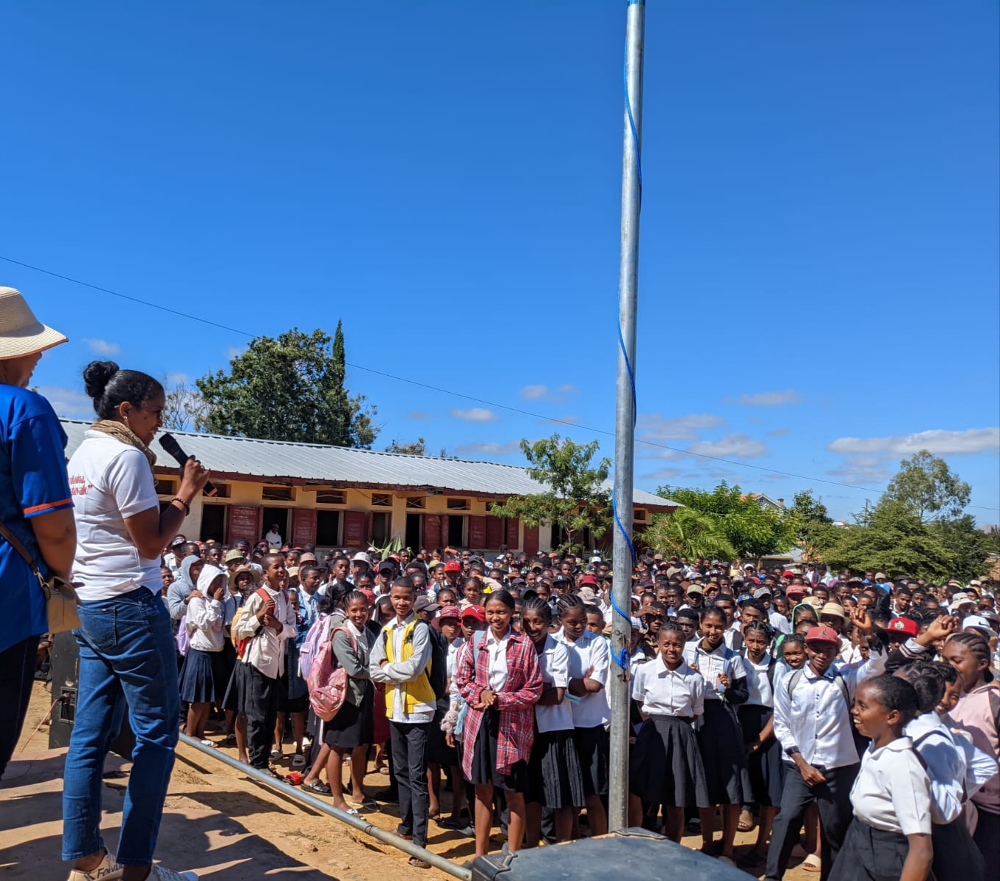
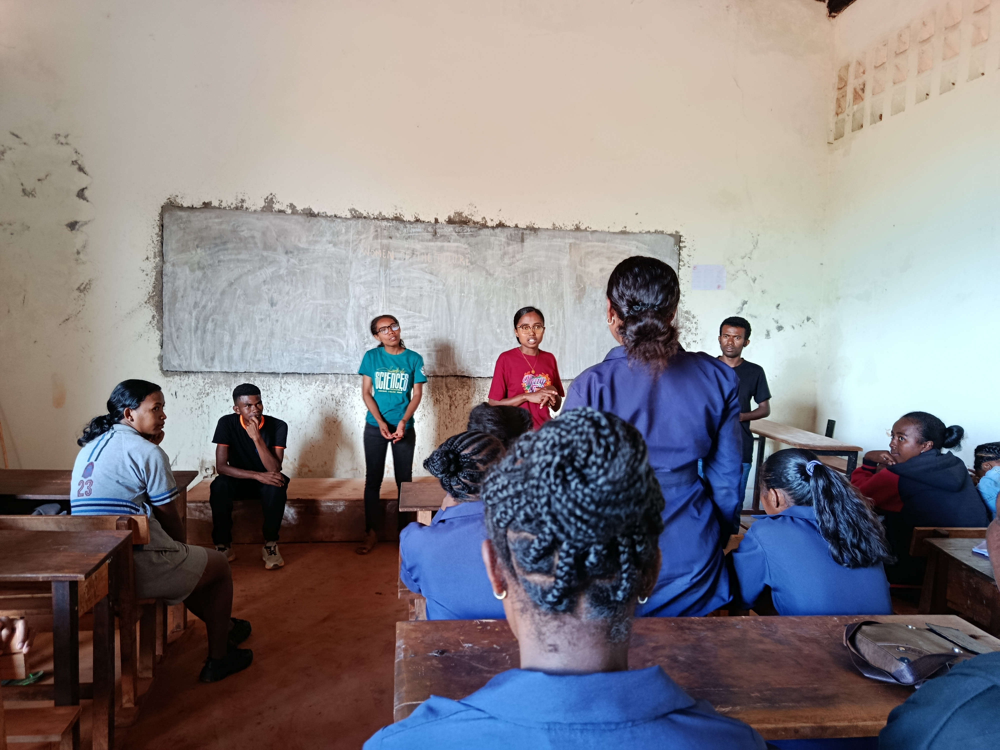
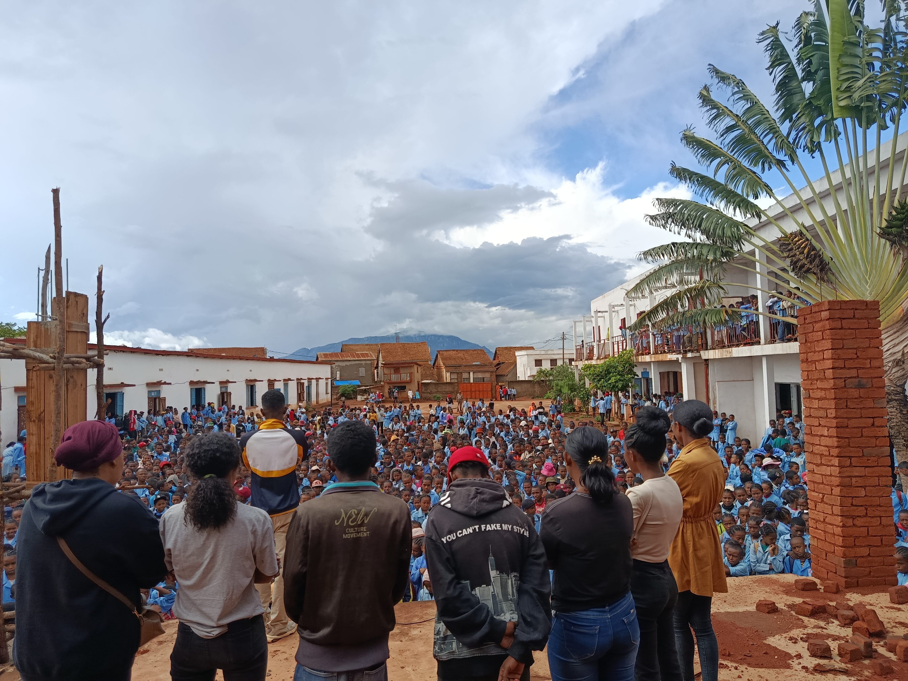
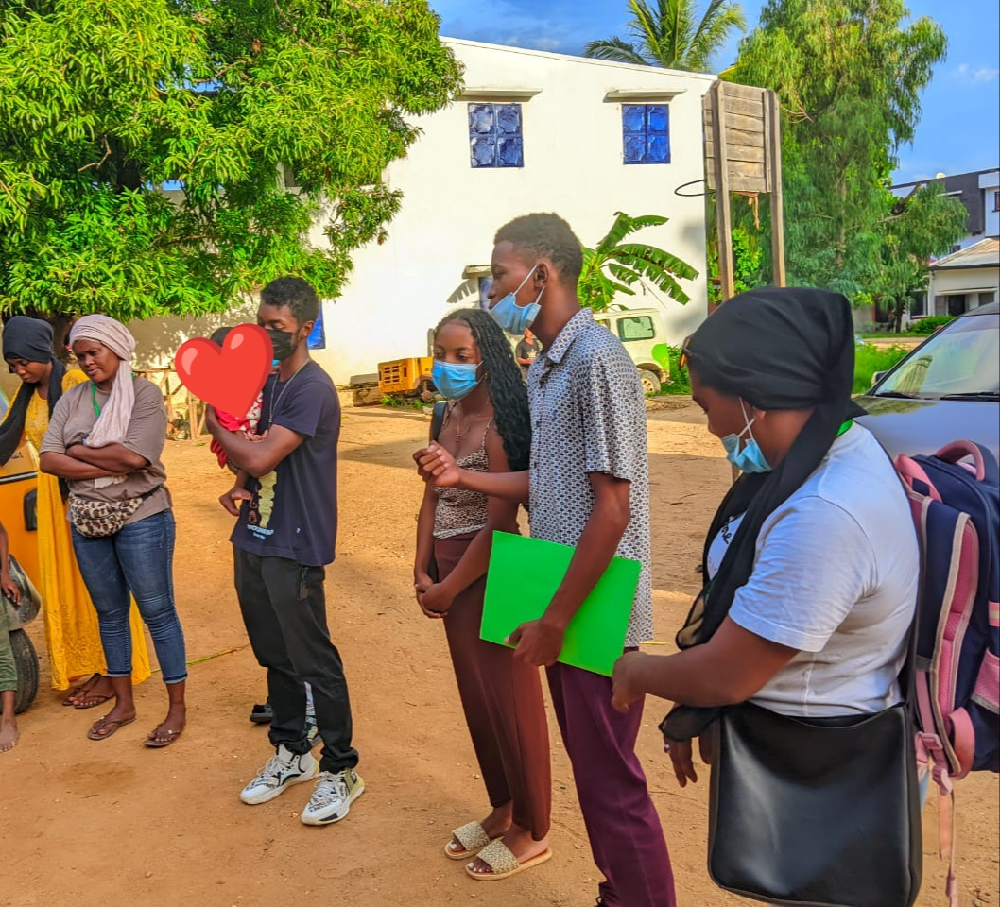
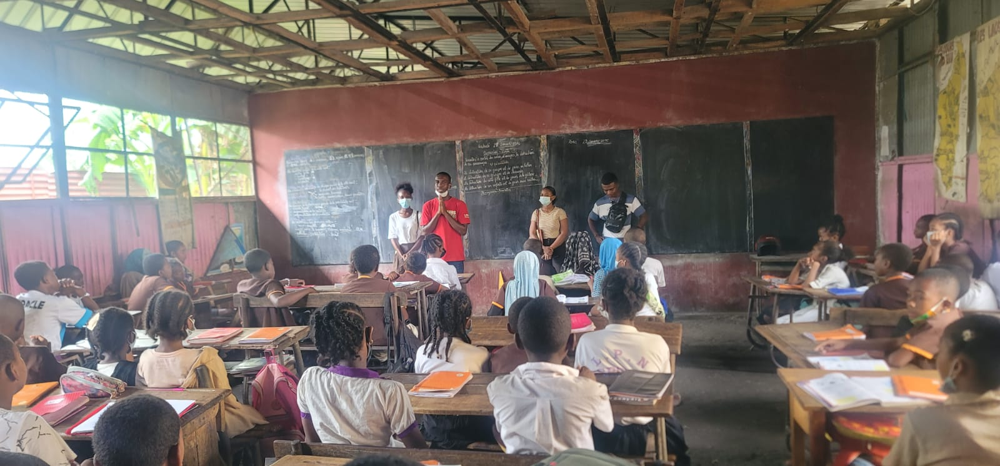
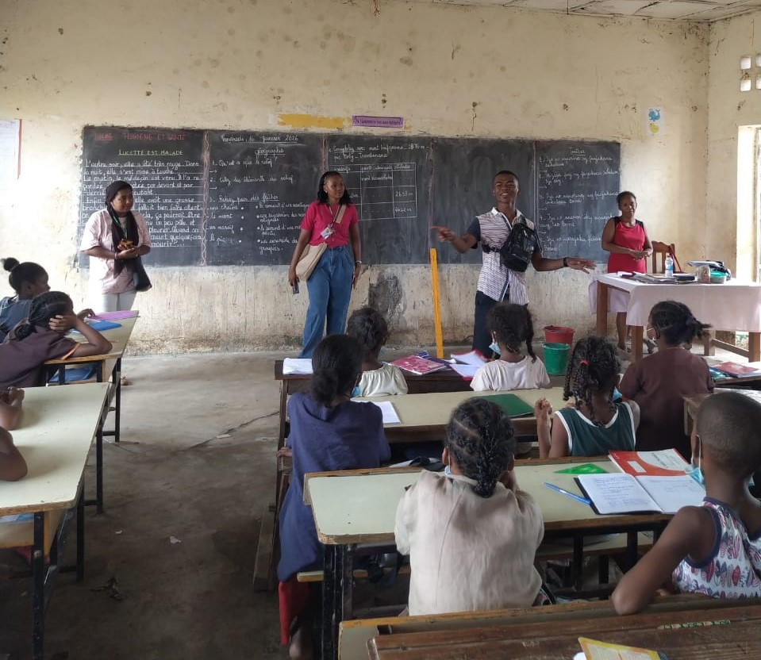
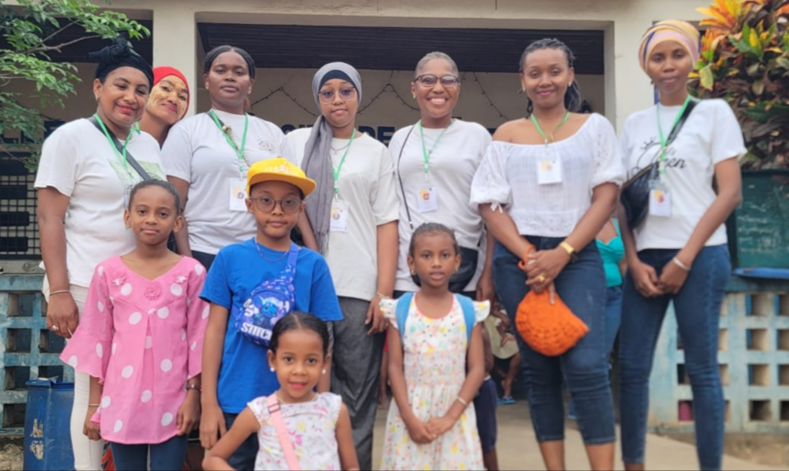

Le 11 février 2026, Women of the Future est intervenue au Lycée Joël Sylvain d’Ambalavao,
dans cinq salles de classe, pour échanger avec 326 jeunes sur le thème du mariage d’enfants.
Les discussions ont porté sur les causes du mariage précoce ainsi que sur ses conséquences sur
la santé, l’éducation et l’avenir des jeunes.
Au cours de la séance, les élèves ont activement participé aux échanges, débattu et proposé
leurs propres solutions pour contribuer à la prévention du mariage d’enfants.
À la fin de l’activité, ils ont exprimé un engagement collectif affirmant leur position en
faveur de l’éducation et de la poursuite de leurs objectifs, à travers le cri collectif :
“Fanambadiana aloha loatra : TSIA ; Hoavy mamiratra : OK”
(Mariage précoce : NON ; Un avenir brillant : OUI)
Cette initiative s’inscrit dans le cadre de la campagne « 100 jours sans mariage d’enfants »
et dans l’engagement de Women of the Future en faveur de la protection de l’enfance
et du droit à l’éducation.
Campagne « 100 jours sans mariage d’enfants »
09 Février 2026 – Lycée Joël Sylvain, Ambalavao

Nouvelle séance de sensibilisation au Lycée Joël Sylvain avec 300 élèves.
Au cours de la discussion, les bénévoles ont interrogé les élèves sur leur connaissance
de leurs droits en tant qu’enfants, ainsi que sur leurs rêves et projets pour leur vie
et leur avenir.
Ces échanges ont permis d’amener les jeunes à réfléchir aux conséquences du mariage
précoce sur leur parcours scolaire et personnel. L’accent a été mis sur l’impact que
cette pratique peut avoir sur la poursuite des études, la réalisation des projets
et la construction d’un avenir autonome.
La séance a suscité un moment de silence et de réflexion parmi les élèves, témoignant
de l’attention portée aux messages partagés et de la prise de conscience engagée
au cours de l’activité.
Cette initiative s’inscrit dans la continuité des actions de Women of the Future
dans le cadre de la campagne « 100 jours sans mariage d’enfants », visant à renforcer
la sensibilisation et l’engagement des jeunes en faveur de leur éducation et de leurs droits.
Women of the Future adresse ses sincères remerciements au Proviseur du Lycée Joël Sylvain,
aux surveillants, aux enseignants, ainsi qu’aux bénévoles mobilisés pour la réussite
de cette activité.
Campagne « 100 jours sans mariage d’enfants »
04 Février 2026 – Lycée Technique et Professionnel d’Ambalavao

"Séance de sensibilisation au LPT Ambalavao – 04 février 2026"
L’avenir des jeunes se construit aujourd’hui. C’est dans cet esprit que Women of the Future a organisé
une séance de sensibilisation interactive au Lycée Technique et Professionnel (LPT) d’Ambalavao,
dans le cadre de la campagne « 100 jours sans mariage d’enfants ».
L’activité a réuni 140 élèves et a été animée par 7 bénévoles de Women of the Future,
des membres de l’Association Jeunes Avenir de Madagascar, ainsi que le Responsable de la Maison des Jeunes
d’Ambalavao, avec la collaboration étroite des responsables de l’établissement.
La séance a permis aux jeunes d’échanger activement sur leur avenir et leurs droits,
de discuter des causes et conséquences du mariage précoce, et de proposer leurs propres
solutions pour contribuer à sa prévention.
À l’issue des échanges, les élèves ont exprimé leur compréhension des enjeux abordés
et ont affirmé leur engagement à se concentrer sur leurs objectifs et à poursuivre leurs études.
Women of the Future remercie les responsables du Lycée Technique et Professionnel d’Ambalavao,
le Chef CISCO, ainsi que l’ensemble des bénévoles et partenaires engagés qui rendent ces actions possibles.
Campagne « 100 jours sans mariage d’enfants »
03 Février 2026 – CEG Ambohijafy, Ambalavao

Dans le cadre de la campagne « 100 jours sans mariage d’enfants », Women of the Future (WOF) a organisé
une séance de sensibilisation au Collège d’Enseignement Général (CEG) Ambohijafy – Ambalavao,
le 03 février 2026, marquant l’extension de ses activités dans la ville d’Ambalavao.
Cette activité a été menée par des bénévoles membres de WOF ainsi que par des bénévoles issus
de l’Association Jeunes Avenir de Madagascar – Ambalavao, avec la collaboration de la Maison des Jeunes
d’Ambalavao. Le représentant de la Maison des Jeunes, relevant du Ministère de la Jeunesse et des Sports,
a également participé à la séance.
La sensibilisation a concerné environ 1 700 élèves, de la 6e à la 3e, âgés en majorité de 11 à 16 ans.
Les échanges ont porté sur l’importance de poursuivre les études, de se concentrer sur leurs objectifs
et de comprendre les risques liés au mariage précoce.
À travers cette campagne, Women of the Future réaffirme son engagement en faveur de la protection
de l’enfance et du droit à l’éducation, convaincue que le développement durable passe par
l’investissement dans la jeunesse.
L’association adresse ses sincères remerciements au Chef CISCO d’Ambalavao, aux responsables du CEG
Ambohijafy, aux bénévoles mobilisés, à l’Association Jeunes Avenir de Madagascar, à la Maison des Jeunes
d’Ambalavao, ainsi qu’à l’ensemble des partenaires et autorités locales pour leur collaboration.
Les activités de sensibilisation se poursuivent dans les prochains jours à Ambalavao.
Action environnementale à la Réserve communautaire d’Anja
30 Janvier 2026 – Ambalavao, Haute Matsiatra
Women of the Future a participé à une action de plantation d’arbres au sein de la Réserve communautaire d’Anja, à Ambalavao.
Cette initiative marque une étape importante dans l’engagement environnemental de l’association
et constitue la première action publique de WOF dans la région Haute-Mahatsiatra.
La protection de l’environnement est l’un des piliers fondamentaux de Women of the Future.
L’association considère que le développement durable ne peut exister sans la préservation des ressources naturelles,
la protection des écosystèmes et la promotion d’actions concrètes en faveur de la nature.
À travers cet activité, les bénévoles ont contribué activement à un geste simple mais essentiel
pour l’avenir : restaurer, protéger et transmettre un environnement sain aux générations futures.
Cette journée a également été un moment d’accueil et de mobilisation des bénévoles,
ainsi qu’un espace d’échange sur l’importance d’intégrer la dimension environnementale
dans toutes les actions de Women of the Future.
En s’engageant dans ce type d’initiative, l’association réaffirme que la protection de l’environnement
est au cœur de sa vision du développement durable et de son action communautaire.
Women of the Future remercie les partenaires et les organisateurs pour cette collaboration,
ainsi que les bénévoles pour leur engagement.
Campagne « 100 jours sans mariage d’enfants »
28 Janvier 2026 – Mahajanga
Dans le cadre de la campagne « 100 jours sans mariage d’enfants », Women of the Future,
en collaboration avec l’association WaKai, a mené des actions de sensibilisation
au Centre d’accueil FANOVOZANTSOA à Mahajanga.
La séance a constitué un espace de parole et de prise de conscience, où les enfants ont été
informés de leurs droits et encouragés à construire leur avenir avec confiance et détermination.
Malgré les défis, les imprévus et les moyens limités, les équipes continuent d’avancer
avec engagement et responsabilité. Cette dynamique s’inscrit dans la conviction que
le développement de Mahajanga passe par la protection de l’enfance et l’accès à l’éducation.
À travers ces actions, Women of the Future affirme que le silence n’est pas une option
face aux enjeux qui concernent les enfants.
Women of the Future remercie l’association WaKai ainsi que l’ensemble des bénévoles
et partenaires pour leur mobilisation et leur engagement constant.
Campagne « 100 jours sans mariage d’enfants »
CDEF Mangarivotra – Mahajanga

Dans le cadre de la campagne « 100 jours sans mariage d’enfants », Women of the Future (WOF)
a mené une séance de sensibilisation à la CDEF Mangarivotra, dans l’après-midi d’hier.
La CDEF accueille des enfants en situation de vulnérabilité et œuvre quotidiennement pour leur protection
et leur accompagnement. Cette action visait à soutenir les équipes qui travaillent auprès des enfants,
afin de renforcer les efforts de prévention contre les risques d’abandon scolaire et de mariage précoce.
Au-delà de la sensibilisation, cette descente a également été un moment de visite de courtoisie
et d’échanges humains. Les bénévoles ont partagé avec sincérité leurs parcours personnels,
les difficultés rencontrées et les obstacles surmontés.
Ces témoignages, simples et authentiques, avaient pour objectif d’inspirer les enfants,
de leur rappeler qu’ils ne sont pas seuls et qu’il est possible de croire en ses rêves
et de persévérer malgré les épreuves.
Conformément aux actions prévues dans la campagne, l’association WaKai était présente
et engagée aux côtés de Women of the Future. Cette collaboration reflète une volonté commune
d’agir pour la protection et le développement des enfants à Mahajanga.
Women of the Future adresse ses remerciements au personnel de la CDEF pour l’accueil chaleureux,
ainsi qu’à l’ensemble des équipes mobilisées pour leur engagement et leur disponibilité.
Ensemble, continuons à protéger, prévenir et agir avec responsabilité.
Campagne « 100 jours sans mariage d’enfants »
Mahajanga

Dans le cadre de la campagne « 100 jours sans mariage d’enfants », Women of the Future poursuit
ses actions de sensibilisation à Mahajanga, cette fois en collaboration avec l’association WaKai.
Le lancement de cette collaboration a été marqué par des activités de terrain menées dans
deux établissements scolaires de la ville :
📍 EPP Fanantenana
📍 EPP Tsaramandroso
À travers ce partenariat, WOF et WaKai unissent leurs forces autour d’un objectif commun :
contribuer au développement de Mahajanga en protégeant les droits des enfants,
en encourageant l’éducation et en prévenant les mariages précoces.
Cette initiative s’inscrit dans la continuité des actions menées dans le cadre de la campagne,
qui mobilise des organisations, des jeunes et des acteurs communautaires engagés
en faveur du bien-être des enfants.
La campagne repose sur l’engagement de jeunes bénévoles, y compris les membres de Women of the Future,
convaincus que le développement durable passe par la protection, l’éducation
et l’autonomisation des enfants et des jeunes.
Women of the Future remercie l’association WaKai pour cette collaboration
et l’ensemble des bénévoles mobilisés pour la réussite de ces actions communes.
Campagne « 100 jours sans mariage d’enfants »
Janvier 2026 – Mahajanga

Sensibilisation des élèves à l’EPP Tsaramandroso, Mahajanga – 16 janvier 2026.
Women of the Future a rejoint, à la fin de l’année 2025, la campagne « 100 jours sans mariage d’enfants »,
une initiative portée par les organisations Child Marriage Free World et
Just Right for Children, visant à sensibiliser et mobiliser les communautés autour de
la protection des droits de l’enfant.
Cette campagne rassemble des organisations, des jeunes et des acteurs communautaires dans plusieurs
pays à travers le monde, autour d’un objectif commun : encourager la réflexion, le dialogue et
l’engagement collectif en faveur du bien-être des enfants, en particulier des filles,
tout en impliquant également les garçons.
L’adhésion de Women of the Future à cette campagne s’inscrit naturellement dans sa vision et ses valeurs.
L’association œuvre pour un développement durable centré sur l’humain, la dignité et la transmission
de valeurs positives aux jeunes générations.
Les premières actions de WOF dans le cadre de cette campagne ont débuté en décembre par des
mobilisations en ligne. En janvier 2026, les actions de terrain ont démarré par une séance de
sensibilisation auprès des élèves de l’EPP Tsaramandroso, à Mahajanga.
Cette mobilisation a été rendue possible grâce à l’implication de bénévoles, de jeunes engagés et
d’associations partenaires. Des jeunes issus de différentes villes de Madagascar ont manifesté
leur soutien et leur volonté de contribuer, sous diverses formes, à cette campagne.
Women of the Future tient à remercier l’ensemble des collaborateurs et volontaires pour leur engagement.
Cette réponse collective témoigne de l’attention, de la solidarité et de la volonté d’agir des jeunes
Malgaches face aux enjeux qui concernent les enfants et l’avenir de la société.
🎁 Action de solidarité au CDEF Mahajanga
Décembre 2025 – Mahajanga

Photo illustrative : membres de Women Of the Future et leurs enfants.
Les images des enfants de la CDEF ne sont pas publiées par respect deleur dignité et leur droit à l'image.
En décembre 2025, l’association Women of the Future a mené une action de solidarité
en faveur des enfants accompagnés par le
CDEF Mahajanga (Collectif des Droits de l’Enfant et de la Famille).
Les enfants sont souvent confrontés très tôt aux inégalités sociales, sans toujours en comprendre
les causes, ce qui peut engendrer un sentiment d’exclusion ou d’injustice. Pourtant, chaque enfant
a droit au respect, à la dignité et à des opportunités équitables, dans un environnement protecteur
et bienveillant.
Fidèle à sa vision, Women of the Future affirme que le développement durable commence par l’humain.
Cette action, réalisée avec des moyens modestes et rendue possible grâce à la mobilisation collective,
reflète notre engagement pour un développement durable, inclusif et porteur d’espoir.
Dans une démarche de transmission des valeurs, nous avons également choisi d’impliquer nos enfants,
afin de leur inculquer dès le plus jeune âge les principes de solidarité, de partage et de
responsabilité collective.